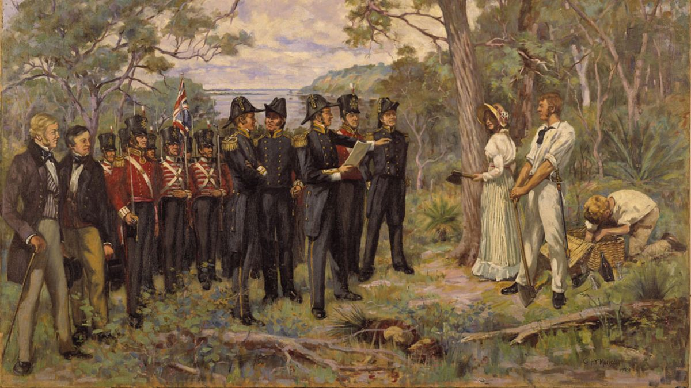

Fedezd fel a világ legkülönlegesebb kontinens-országát
Általános információk
Ausztrália egy hatalmas, önálló kontinens, amely egyedülálló élővilággal és változatos tájjal rendelkezik. Területe 7,7 millió négyzetkilométer, lakossága körülbelül 26 millió fő. Az ország hivatalos nyelve az angol, államformája parlamentáris monarchia, amelynek élén az Egyesült Királyság uralkodója áll. Ausztrália híres nemzeti parkjairól, trópusi esőerdőiről, sivatagairól és a part menti városairól.
Történelem

Az ausztrál kontinens őslakosai több tízezer éve élnek a földrészen. Kultúrájuk a világ egyik legrégebbi és legösszetettebb hagyományrendszere. Az első európai kapcsolatot holland hajósok alakították ki a 17. században, de a tényleges gyarmatosítás csak 1788-ban kezdődött, amikor a britek büntetőtelepet alapítottak Sydney-ben. 1901-ben jött létre az Ausztrál Államszövetség, amely azóta független, de a brit korona alatt álló országként működik.
Érdekes városok
Ausztrália legnagyobb városai a gazdaság, turizmus és kultúra szempontjából is kiemelkedőek.
A mai Ausztrália egy fejlett, sokszínű és befogadó társadalommal rendelkező ország. Gazdasága stabil, főként bányászatból, mezőgazdaságból, turizmusból és oktatásból él. A nagyvárosok – Sydney, Melbourne, Brisbane, Perth és Adelaide – modern és élhető környezetet nyújtanak. Ausztrália aktívan részt vesz a nemzetközi ügyekben, tagja az ENSZ-nek, a G20-nak és számos ázsiai–csendes-óceáni szervezetnek.
Gasztronómia
Az ausztrál konyha sokszínű és nemzetközi hatásokkal átszőtt. A hagyományos ételek közé tartozik a húsos pite, a BBQ, a barramundi (egy helyi hal), a kenguruhús, valamint a lamington nevű kókuszos sütemény. Emellett az ázsiai, olasz és közel-keleti konyha is nagy népszerűségnek örvend. Az őslakos kultúra úgynevezett "bush tucker" ételei – mint a wattleseed vagy a bogong lepke – is újra egyre népszerűbbek.